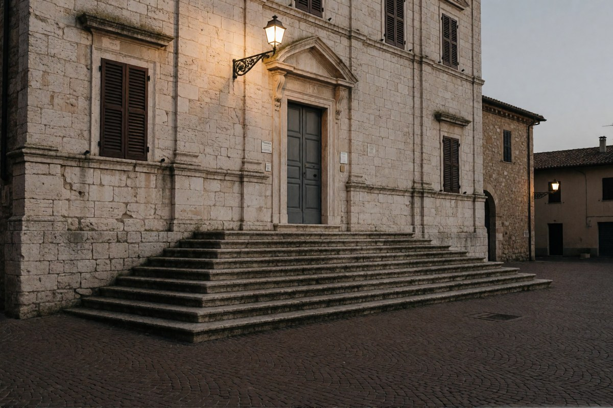

Cronaca · 21 novembre 2026
Morte di De Gennaro, la Procura di Grosseto apre un fascicolo

L'ipotesi di reato è istigazione al suicidio. Nella casa di Montiano i rilievi della scientifica e del Ris, mentre la politica si divide fra cordoglio e accuse alla magistratura.
di Franco Zanghì
Sulla morte di Gianni De Gennaro, l'ex capo della Polizia, la Procura di Grosseto ha aperto un fascicolo per istigazione al suicidio. Lo riferiscono l'ANSA, il Corriere della Sera e il Quotidiano Nazionale.
De Gennaro, 78 anni, è stato trovato senza vita la mattina di sabato 21 novembre nella sua casa di campagna a Montiano, vicino a Magliano in Toscana, in provincia di Grosseto. Era indagato dalla Procura di Caltanissetta per depistaggio sulla strage di via D'Amelio.
I rilievi
Nella casa sono intervenuti la polizia scientifica e i carabinieri del Ris. La salma è stata portata all'obitorio di Grosseto.
Sulla presenza di scritti lasciati dall'ex capo della Polizia le fonti non coincidono: il Corriere della Sera scrive che non è stato trovato nessun biglietto, mentre il Messaggero riferisce di biglietti indirizzati ai familiari e di altri documenti. Il dato, alla data di pubblicazione, non è verificabile in modo indipendente.
Mattarella, il governo, la difesa
Il presidente della Repubblica Sergio Mattarella, a quanto si apprende, ha telefonato al fratello Andrea De Gennaro, comandante generale della Guardia di Finanza, per esprimere a lui e alla famiglia il suo cordoglio.
La presidente del Consiglio Giorgia Meloni si è detta profondamente scioccata. Il vicepresidente del Consiglio Matteo Salvini ha parlato di un massacro mediatico e giudiziario, che una persona e una carriera come quella di De Gennaro non meritavano.
Parlano anche i difensori. Il professor Franco Coppi ha raccontato di aver passato con lui l'intera mattinata di venerdì a lavorare sulla difesa, e di essersi dato appuntamento per il giorno dopo. L'altro avvocato, all'ANSA, si è detto sconvolto e ha parlato delle conseguenze di accuse infamanti gettate in pasto all'opinione pubblica. Secondo la difesa, il giudice per le indagini preliminari, respingendo la richiesta di arresto, aveva escluso i gravi indizi.
L'accusa di Caltanissetta
La Procura di Caltanissetta contestava a De Gennaro il depistaggio sulla strage di via D'Amelio, quella in cui il 19 luglio 1992 furono uccisi il giudice Paolo Borsellino e cinque agenti della sua scorta.
Secondo i pubblici ministeri avrebbe spinto un collaboratore di giustizia a non parlare con i magistrati e avrebbe nascosto dei documenti. Il tribunale del riesame avrebbe dovuto decidere il 1° dicembre sulla richiesta di arresti domiciliari respinta dal gip.
Il commento dell'autore
Due cose, adesso, vanno tenute insieme. La prima: De Gennaro era indagato, non condannato, e la presunzione d'innocenza valeva per lui come vale per chiunque. La seconda: l'inchiesta di Grosseto serve a capire che cosa sia accaduto, e non tocca a chi scrive anticiparne l'esito.
Con la sua morte il procedimento nei suoi confronti si chiude. La ricerca della verità su via D'Amelio, invece, no. E resta una domanda: sapranno politica e magistratura, almeno per qualche giorno, abbassare la voce?
Fonti
- ANSA, 21 novembre 2026, l'apertura del fascicolo della Procura di Grosseto
- Quotidiano Nazionale, «De Gennaro, la Procura di Grosseto indaga per istigazione al suicidio», 21 novembre 2026
- Sky TG24, «Morto Gianni De Gennaro, ex capo Polizia si è ucciso. Si indaga per istigazione a suicidio», 21 novembre 2026
- Milano Finanza, «Gianni De Gennaro si è ucciso: l'ex capo della Polizia trovato morto nella casa di campagna», 21 novembre 2026
- Corriere della Sera, i rilievi nella casa e le dichiarazioni dei difensori; Il Messaggero, i biglietti ai familiari
- La Nazione, la cronaca da Grosseto, 21 novembre 2026
Un fascicolo per istigazione al suicidio è un atto dovuto e non indica di per sé l'esistenza di responsabilità. Le fonti si contraddicono sulla presenza di scritti lasciati ai familiari: sono riportate entrambe le versioni, attribuite. Su scelta dell'autore non sono riportati dettagli sulle modalità della morte.